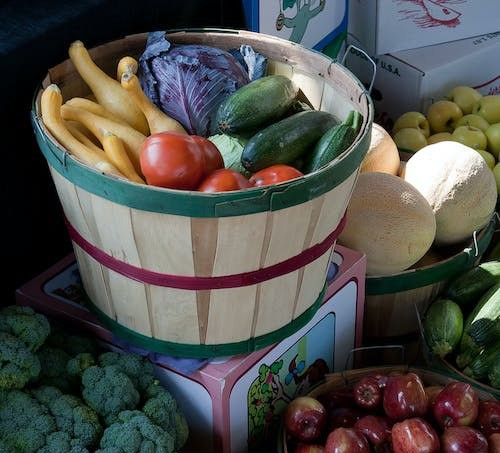

Lesson 4
UNIT 1
Agricultural development
BASIC AGRICULTURE

Agribusiness
Learn the active vocabulary of the Lesson and be ready to use it in your further work:
DO THIS TEST!
Poverty n – бідність, злидні; reduction
n – зниження; rely
on v – залежати від; livelihood
n -
засоби до існування; involve
v in – містити в; the
growing of the food – вирощування продуктів харчування; processing
n – обробка; increasingly
adv – чим раз більше та більше; encompass v – охоплювати, оточувати; engage
v – займатись; a
large share of gross domestic product (GDP) – велика частка валового внутрішнього продукту;
the
total dollar value of goods and services – загальна доларова вартість товарів і
послуг; decline v – знижуватись, зменшуватись; scale
n – рівень; multinational
company – транснаціональна компанія; rise
to concerns – викликати занепокоєння; market
share – частка ринку; seed
market share – частка ринку насіння; market competition – ринкова конкуренція; introduce policies – запроваджувати політику; encourage v – заохочувати; costs – витрати.
AGRIBUSINESS One billion people
around the world are still chronically poor. Agricultural growth and
productivity remains central to poverty reduction, particularly in the poorest
countries, where a large share of the population relies on agriculture and
agribusiness for their livelihood. Increasingly,
multinationals have become dominant players in agribusiness. There is a variety
of business activity involved in getting agricultural produce to consumers. The
activities include the growing of the food, its processing, packaging, its
distribution and marketing. The term agribusiness encompasses the businesses
engaged in any of these activities. Increasingly, multinational companies have
come to dominate the agribusiness area. As might be
expected, in developing countries agribusiness accounts for a large share of
gross domestic product, or the total dollar value of goods and services that an
economy produces. As a country's GDP rises though, and an economy becomes more
industrialized, the share of agribusiness in GDP tends to go up before it starts
to decline, according to the World Bank. Taking advantage of
their size to introduce economies of scale, multinational corporations have come
to dominate the agribusiness sector. They are able to engage in a variety of
activities. For instance, companies that process foods have also entered
distribution. The dominance of
multinational companies in agribusiness has also given rise to concerns about a
monopoly effect. For instance, according to the World Bank, the four biggest
seed companies accounted for 33 percent of market share in the seed market in
2004. In 1997, they accounted for 27 percent of the seed market share. As market
competition declines, consumers tend to pay more for products. Governments could
introduce policies to encourage smaller market participants in the agribusiness
sector. However, this is not easy. If private businesses find that it is more
expensive to do business with smaller farmers, for instance, they may find
alternatives. Or they may pass on the higher costs to consumers. Governments
could make it easier for smaller businesses to operate in the agribusiness
sector by, for instance, providing easier access to financing.
I. Answer the following questions:
1.
Why are billion people still chronically poor?
2.
What activities include the agriculture?
3.
What businesses do the term agribusiness encompass?
4.
What is GDP?
5.
Why
have multinational corporations come to dominate the agribusiness
sector?
6.
What is a monopoly effect?
7. What must do Government for the agribusiness?
II. Translate the words with negative prefixes in-(im-):
Incorrect, inactive, inorganic, imperfect, incomplete, indirect, immeasurable, immovable, inactivity, immature, immoderate, implant, inorganic, insufficient.
III. Translate the word combinations containing nouns in the function of attribute:
Farm animal, class name, agriculture organization, grain crops, dairy cattle, poultry farm, village school, animal diseases, milk yield, beef cattle, animal life, animal body, dairy herd, pig production, farm planning, mammary glands, that year spring, this enterprise production, our faculty hostel, volume weight.
IV. Translate the following sentences:
Increasingly -
more and
more:
to an increasing degree.
1. People
are becoming increasingly aware
of this problem.
2. Increasingly,
scientists are questioning the data.
3.The
situation grew increasingly.
For
instance -
an example of a particular type of action or situation; an occasion of something
happening.
1.
In most instances the
disease can be controlled by medication.
2. They have decided not to oppose the decision in this instance.
V. Find the synonyms in the text:
Raise
–
depend
–
concern
–
surround
–
occupy
–
calculate
–
turn
down –
dispensation
–
VI. Translate the following sentences:
1.Уряд
повинен проводити політику заохочення для малого бізнесу в аграрному
секторі.
2.Більша
частина населення покладається на агробізнес, який їх забезпечує засобами
продовольства.
3.Агробізнес
включає вирощення продукції, її обробку, пакування, розповсюдження та
продаж.
4.Збільшення міжнаціональних компаній в агробізнесі призводить до
утворення концернів та їхньої монополії.
VII. Match the words from the text with their corresponding definitions:
1. Agriculture
2. Agribusiness
3. Livelihood
4. Consumer
5. Monopoly
6. Seed
А) a way of earning
money in order to live.
В) the
science, art, or practice of cultivating the soil, producing crops, and raising
livestock and in varying degrees the preparation and marketing of the resulting
products.
С)
complete control of the entire supply of goods or of a service in a certain area
or market.
D)
the
business or industry of farming or agriculture : farming thought of as a large
business.
E)
a small object produced by a plant from which a new plant can grow.
F) a person who buys goods and service
VIII. Read the following phrases: 1. 150 magazines; 1800 students;
2000dollars; 12000 specialists; 5640000 books;
2. On page 546; by bus 287; in room 819; 7
o’clock train;
3. Hundreds of students; dozens of shops;
millions of peoples; thousand dollars;
4. August 24, 1991; September 11, 2004;
December 25, 2005; on the 1st of August; on the 30 st
of November; on the 25 th of March;
1. Ukraine has
very favourable conditions ... .
2. There are two
main branches of agricultural production in Ukraine: ... .
3. Crop production
is ... .
4. It includes ... .
5. Almost half
of the cropping area is occupied by cereals such as ... .
6. Close to 40 types
of vegetable crops are grown in Ukraine: ... .
7. Animal husbandry
is ... .
8. Birds farmed
include ... .
a) winter wheat,
maize and legumes, rye, oats and barley.
b) the practice of
growing and harvesting crops.
c) chicken, duck,
goose, turkey.
d) crop production
and animal husbandry.
e) for the
development of agricultural production.
f) potatoes,
cabbage, tomatoes, cucumbers, red beets, carrots, onions, garlic,
etc.
g) grain and
industrial crops, meadow culture, fruit and vegetable raising.
h)
the practice of breeding of farm animals and their use.
X. Translate into Ukrainian and form the sentences:
Favourable conditions; agricultural production; fertile soils; agricultural raw material; crop production; animal husbandry; grain crops; industrial crops; temperately warm climate; dairy and beef cattle breeding; poultry industry; state and collective farms.
XI. Read and translate the text, find the main points in it. Write the highlights of this text:
DOMESTIC SUPPORT OF LIVESTOCK PRODUCTION IN
UKRAINE
Livestock plays an
important role in food supplying. However, this industry is today in Ukraine in
a difficult situation. A gradual reduction of livestock numbers affected both
the output and the changes in the structure and range of livestock production.
In recent years,
there has been a tendency to a reduction of meat and milk consumption in the
Ukraine’s domestic market due to the low purchasing power of individuals, which
therefore causes difficulties for the country’s food security. In the structure
of livestock production in Ukraine, the dominant place belongs to farms.
However, small-scale production is not able to provide high quality products and
volumes necessary to meet domestic demand.
With significant
available resources of Ukraine, the country instead of exporting the livestock
products has become an importer. The Ukrainian allocations to supporting the
livestock production are quite significant, due to budgetary payments and
subsidies or rebates in the value added tax (VAT). However, this does not
significantly influence either the output or the performance indicators of
improvement in the livestock production. All this testifies to the imperfection
of mechanism of state support for the livestock production in Ukraine.
The global financial
crisis has reduced the financial capacity of the state support for the livestock
industry.
Therefore, under these conditions, there is an urgent need of an efficient use of budgetary resources and of an improvement of the mechanism of support for the livestock production in Ukraine.
XII. Write in letters fractional numerals:
Example:
½ - a half (one half)
1.
2/3
2.
6.51
3.
13/4
4.
0.02
5. 21/5